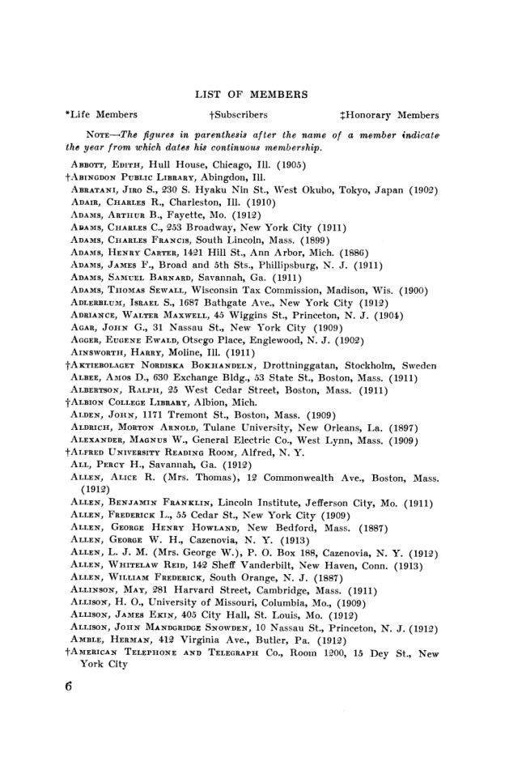

Manual de 1913: anuidade de cinco dólares e uma lista de 56 páginas
Leitura: 5 min
O manual de 1913 traz o estatuto revisto em 1911, com anuidade de cinco dólares e um conselho editorial no lugar do antigo comitê, e uma lista de sócios que já ocupa 56 páginas.


Em 1910, ser sócio da associação custava três dólares por ano. No manual de 1913, o artigo III do estatuto pede cinco, e a contribuição vitalícia, que era de cinquenta dólares, passou a cem. O texto informa que foi revisto na reunião anual de dezembro de 1911, a primeira depois do lançamento da American Economic Review.
O Hand Book of the American Economic Association de 1913 saiu como suplemento do nº 3 do vol. 3 da Review, impresso pela Princeton University Press e vendido a 50 centavos em brochura. A estrutura é a dos manuais anteriores: dirigentes, propósitos da associação, estatuto e lista de sócios, seguida do catálogo de publicações. Diferentemente do manual de 1910, comentado no nº 106, não traz atas nem relatórios de tesouraria.
Quem dirigia a associação em 1913?
O presidente do ano era David Kinley, da University of Illinois, com John H. Gray, da University of Minnesota, Charles W. Macfarlane, de Filadélfia, e Willard E. Hotchkiss, da Northwestern University, como vice-presidentes. T. N. Carver, de Harvard, seguia como secretário e tesoureiro. Davis R. Dewey, do Massachusetts Institute of Technology, aparecia como editor-gerente da Review, ao lado de um conselho editorial de seis nomes, entre eles Jacob H. Hollander, Allyn A. Young e Edwin W. Kemmerer. A página de abertura lembra que a associação fora organizada em Saratoga, em 9 de setembro de 1885.
O que mudou no estatuto?
Os objetivos não mudaram: incentivo à pesquisa econômica, em especial ao estudo histórico e estatístico das condições reais da vida industrial, publicações e plena liberdade de discussão, sem posição partidária. Mudou a máquina. O Comitê de Publicações deu lugar a um conselho editorial (Editorial Board) encarregado das publicações. O estatuto cria o cargo de editor-gerente, com mandato de três anos, e fixa mandatos de três anos para os seis membros do conselho e os seis membros eleitos do Comitê Executivo, escalonados para que dois de cada colegiado saiam a cada ano.
O texto de apresentação registra uma consequência da reforma. Os dirigentes continuam sem remuneração, com uma exceção: o editor da American Economic Review. Toda a receita, diz o manual, vai para edição, impressão e circulação das publicações e para as reuniões anuais. Sobre a revista, o tom é de quem já tem um produto estabelecido.
“Embora tenha menos de três anos, já conquistou um lugar entre as revistas científicas sérias do país.” (“Though less than three years old, it has already made a place for itself among the serious scientific journals”)
Quantos eram os sócios?
O manual não traz um total apurado. A apresentação fala em duzentos e sessenta assinantes, entre eles as principais bibliotecas do país; em 1910 eram quase duzentos. A página de anúncios, no fim do volume, informa que a associação tem 2.600 sócios. No manual de 1910, sócios e assinantes somavam 1.360 nomes. A lista de sócios, que ocupava 43 páginas em 1910, ocupa agora 56.
O que a lista mostra sobre a profissão?
Desde 1910, cada nome traz entre parênteses o ano a partir do qual a filiação é contínua. A grande maioria das datas é de 1909 em diante; os nomes de 1886, como o de Henry Carter Adams, são poucas dezenas. O quadro dobrado é, em boa parte, um quadro novo.
Os endereços mostram onde trabalhavam esses economistas. Ao lado das universidades aparecem órgãos públicos, como o Bureau of the Census, a Interstate Commerce Commission, o Bureau of Corporations e comissões estaduais de tributação; empresas, como a Prudential Insurance, a General Electric e o departamento de informações da American Telephone and Telegraph; e bancos de vários estados. Há sócios em Tóquio, Xangai, Buenos Aires, Cidade do México, Moscou, Bombaim, Londres e Paris, e assinantes como uma livraria de Estocolmo. Entre os sócios honorários estão Alfred Marshall, de Cambridge, Francis Y. Edgeworth, de Oxford, Adolph Wagner, de Berlim, e Charles Gide, de Paris.
Na minha leitura
Na minha leitura, o manual de 1913 mostra o desenho financeiro que a associação adotou para sustentar a Review. Em vez de cortar publicações, como se cogitava em 1909, elevou a anuidade, igualou o preço do sócio ao do assinante institucional e profissionalizou a direção editorial, com um editor pago e mandatos escalonados que dão continuidade ao conselho. A lista de sócios sugere que a aposta funcionou pelo lado da demanda: o quadro dobrou no mesmo período em que o preço subiu, e cresceu com gente de fora da universidade, nos órgãos de regulação e nas empresas, que encontrava na revista um serviço profissional.
Glossário
- Assinante (subscriber)
- instituição ou pessoa que recebe as publicações sem ser sócia, como as bibliotecas.
- Conselho editorial (Editorial Board)
- colegiado de seis membros que, pelo estatuto de 1911, cuida das publicações no lugar do antigo Comitê de Publicações.
- Mandato escalonado
- regra pela qual só parte de um colegiado é renovada a cada ano, para dar continuidade.
- Sócio vitalício (life member)
- quem paga uma contribuição única e fica isento das anuidades.
Documentos, periódicos e notas (3)
- Purposes of the American Economic Association — texto institucional (pp. 1–2). Apresenta a associação como reunião de interessados em economia política: professores de todas as universidades e das principais faculdades, homens de negócios, jornalistas, advogados e políticos, além de duzentos e sessenta assinantes e uma representação crescente no exterior. Anuncia Minneapolis, em Minnesota, como sede da reunião de 1913, nas festas de fim de ano. Resume as séries de publicações desde março de 1886 e registra que a American Economic Review, iniciada em 1911, já tem lugar entre as revistas científicas do país. Reafirma que a associação não é órgão de partido, seita ou instituição e que, salvo o editor da Review, os dirigentes não são remunerados; a anuidade pode ser vista como assinatura, filiação ou contribuição a um fundo de publicações. JSTOR
- Constitution of the American Economic Association — texto revisto na reunião anual de dezembro de 1911 (pp. 3–5). Mantém os objetivos de 1905: pesquisa econômica, em especial histórica e estatística, publicações e plena liberdade de discussão, sem posição partidária. A anuidade passa a cinco dólares e a contribuição vitalícia a cem; continuam admitidos até 25 sócios honorários estrangeiros. Entre os cargos entram um editor-gerente, com mandato de três anos, e um conselho editorial de seis membros, que assume as publicações; o Comitê Executivo inclui o presidente do conselho e seis membros eleitos, com mandatos escalonados. O quórum do Comitê Executivo é de cinco membros, sem contar vice-presidentes e ex-presidentes. JSTOR
- List of Members (pp. 6–61). Relação alfabética de sócios e assinantes, com endereços e sinais para sócios vitalícios, assinantes e honorários, e o ano de início da filiação contínua entre parênteses. Ocupa 56 páginas, ante 43 em 1910. A maior parte dos nomes entrou de 1909 em diante; os endereços incluem universidades, órgãos federais e estaduais, empresas, bancos e sócios em vários países. Fecha com o catálogo das publicações desde 1886 e o anúncio da Review. JSTOR
Fontes
- Purposes of the American Economic Association (pp. 1–2). JSTOR · Internet Archive (PDF)
- Constitution of the American Economic Association (pp. 3–5). JSTOR · Internet Archive (PDF)
- List of Members (pp. 6–61). JSTOR · Internet Archive (PDF)
- Sumário da edição no JSTOR: The American Economic Review, vol. 3, nº 3 (suplemento).
Documento em domínio público (EUA, publicado antes de 1931), via JSTOR Early Journal Content e Internet Archive. Resumo e comentário do autor deste site, sem afiliação com a American Economic Association. Encontrou um erro? Escreva: a correção é publicada no próprio texto, com data.
← Nº 125 · Setembro de 1913: pools, dólar compensado e a teoria da impaciência Nº 127 · A reserva que não se vendia e as objeções ao dólar compensado →